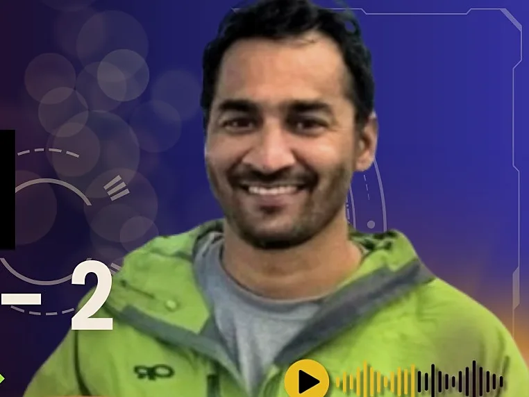
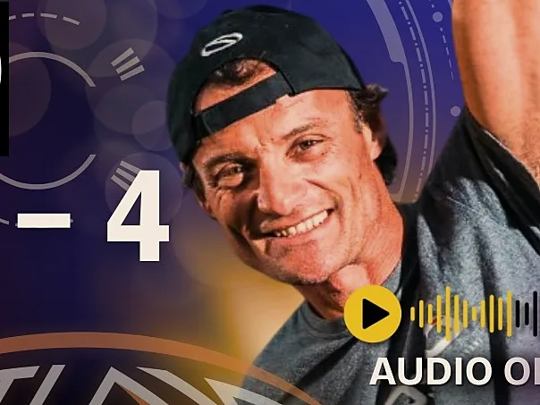
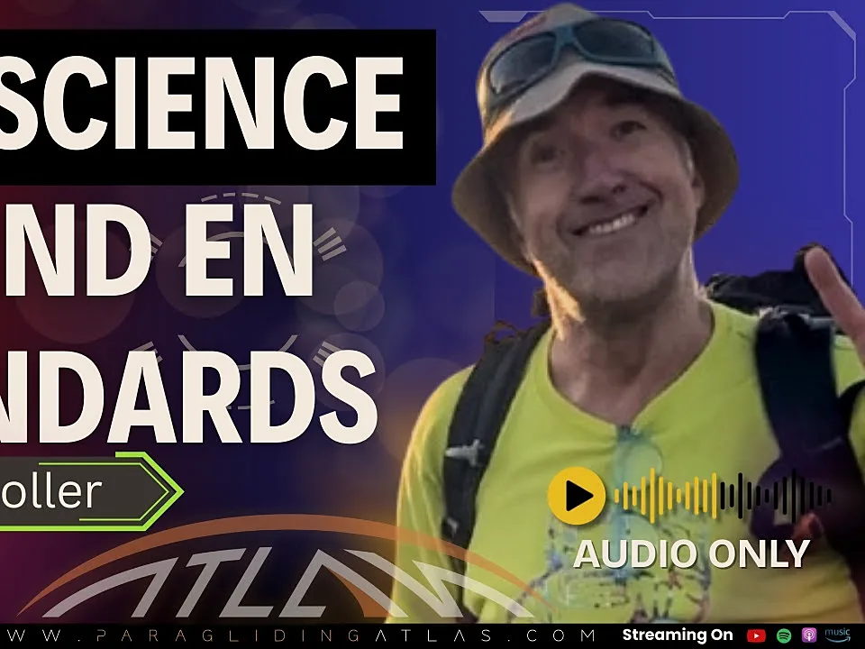
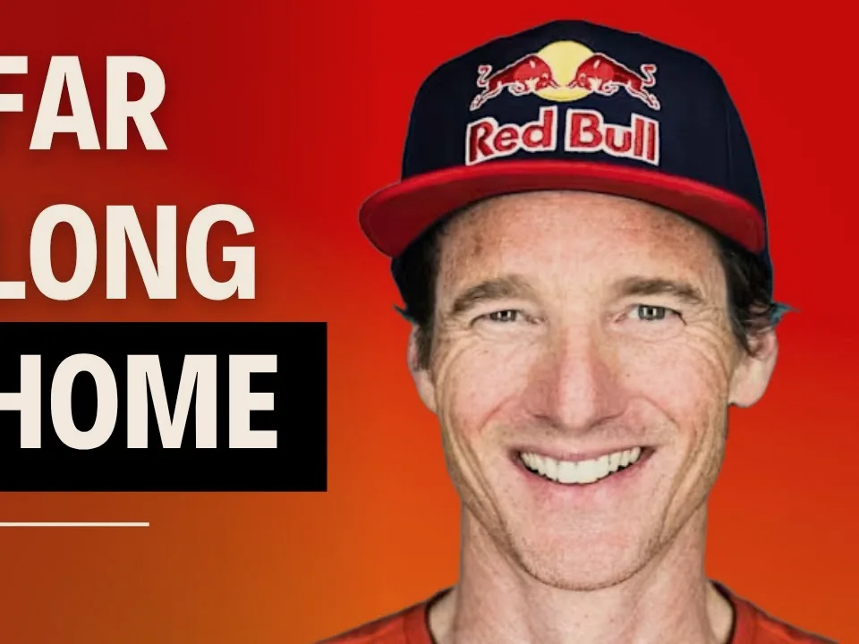
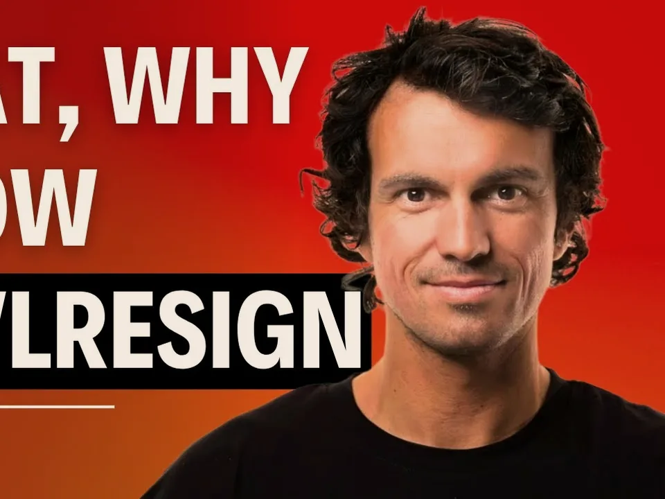
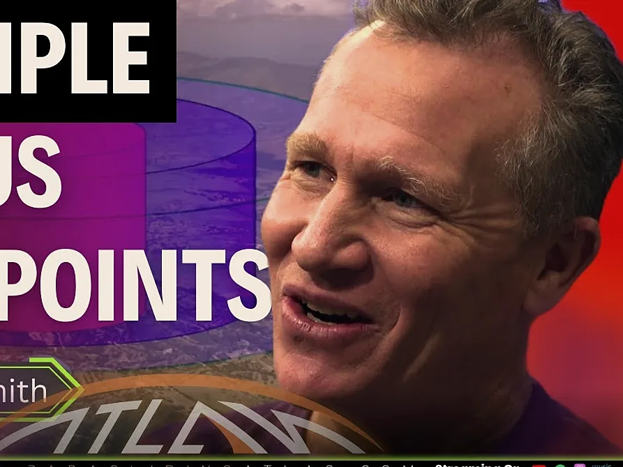
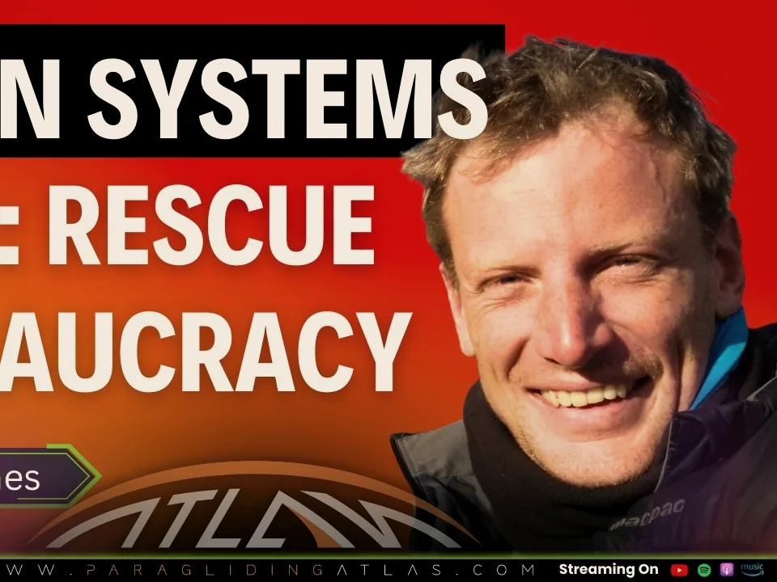
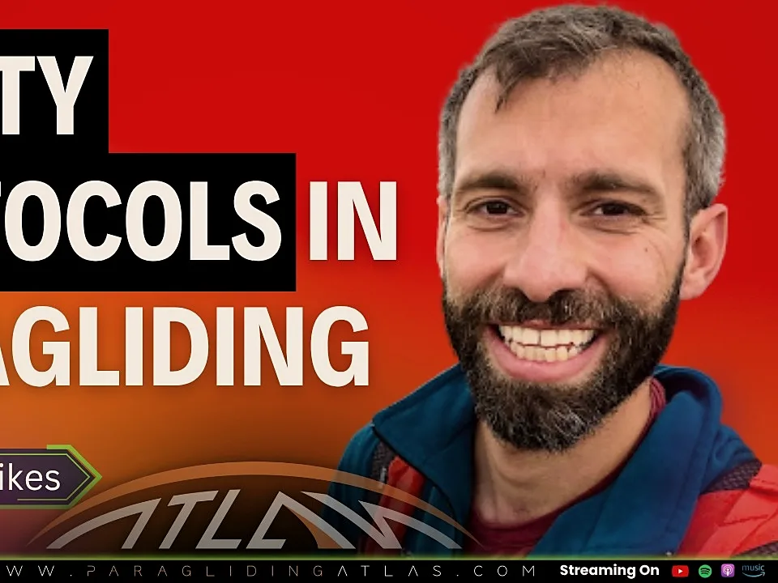
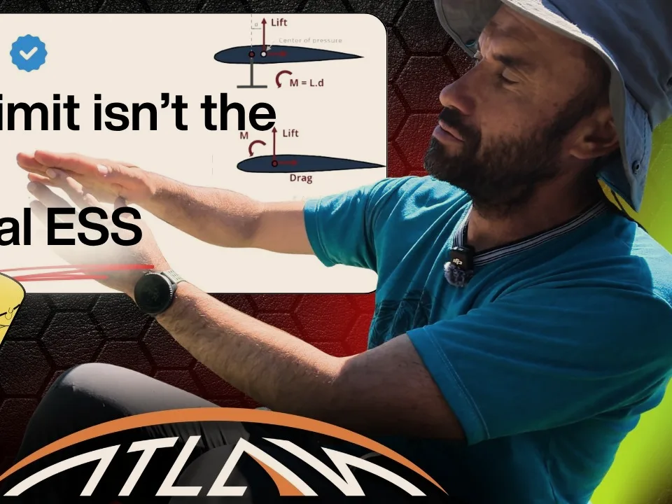
Paragliding Podcast Episode Library
So if you get below 1800 meters, start looking for a safe landing. Don't get close to the terrain unless you really know what you're doing
Vistasp Kharas Navigating Panchgani (Pre PWC India) : Vistasp Kharas · 54 min
Open the episode →Scroll to fly along the yearsLand now ↓
Five shelves
Who is talking
By topicAll 86 conversations
 How to Thermal Like a ProBrett JanawayFly better73 min6 September 2026
How to Thermal Like a ProBrett JanawayFly better73 min6 September 2026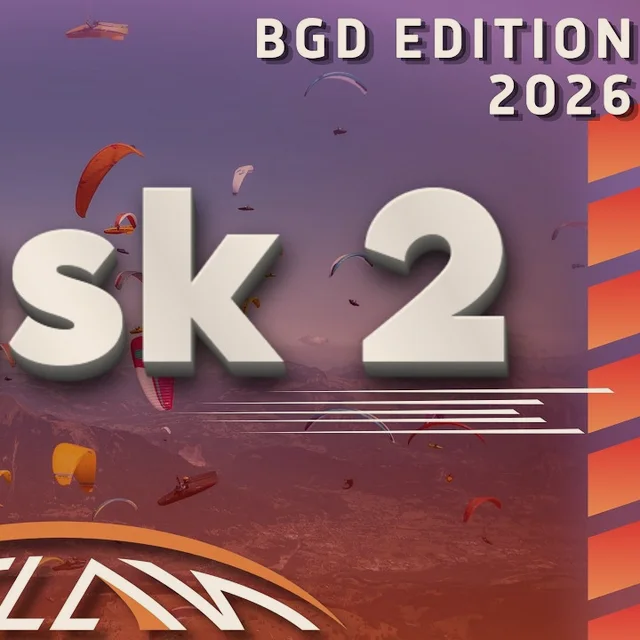
SRS Piedrahita BGD Edition Task 2 HighlightsWorld CupsCompetition791 September 2026 Luc Armant talks about The Moment Coefficient, Enzo 3 Certification…Luc ArmantFly better21 min27 August 2026
Luc Armant talks about The Moment Coefficient, Enzo 3 Certification…Luc ArmantFly better21 min27 August 2026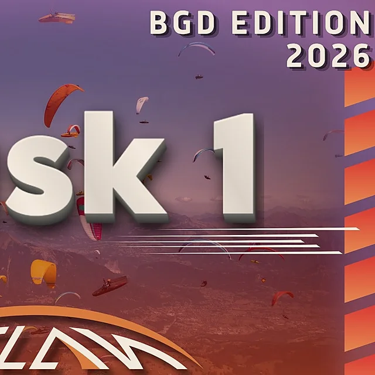
SRS Piedrahita BGD Edition Task 1 HighlightsWorld CupsCompetition7825 August 2026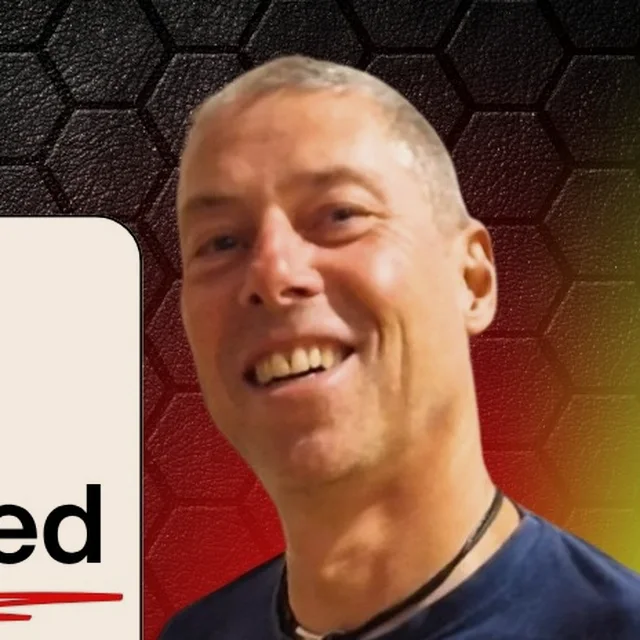
Technical Masterclass by Brett Janaway | Science of Paraglider…Brett JanawayFly better89 min23 August 2026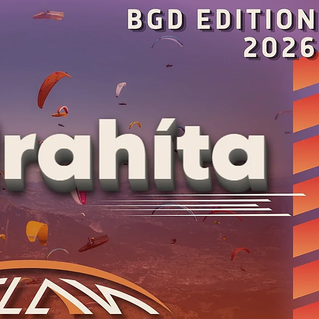
SRS BGD Edition 2026 | Day 1World CupsCompetition7719 August 2026 Robert (Robbie) WhittallRobert (Robbie) WhittallCompetition113 min769 August 2026
Robert (Robbie) WhittallRobert (Robbie) WhittallCompetition113 min769 August 2026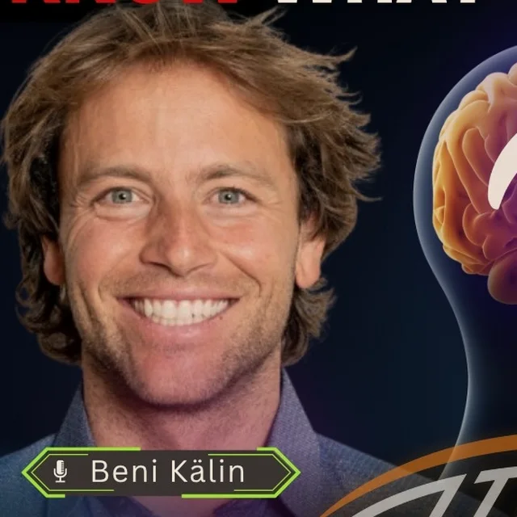
MetacognitionBeni Kalin & Heli SchrempfRisk and safety109 min7529 June 2026 The Russell Ogden InterviewRussell OgdenRisk and safety132 min7427 April 2026
The Russell Ogden InterviewRussell OgdenRisk and safety132 min7427 April 2026 Paragliding Physiology & Safety Protocols | Dr Matt Wilkes ExplainsDr Matt WilkesRisk and safety83 min7318 April 2026
Paragliding Physiology & Safety Protocols | Dr Matt Wilkes ExplainsDr Matt WilkesRisk and safety83 min7318 April 2026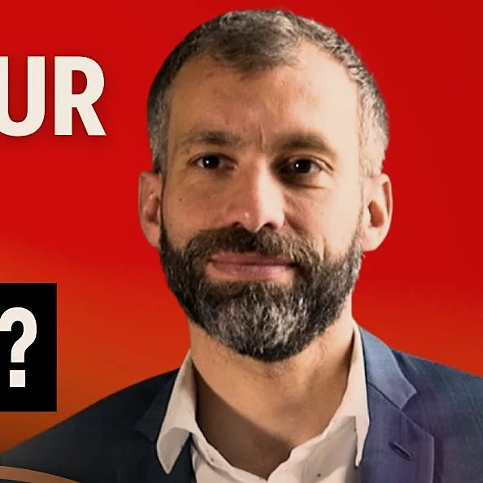
If you fly in the Himalayas, Alps, or above 3000 mtrs, this episode is…Dr Matt WilkesRisk and safety9 min7210 April 2026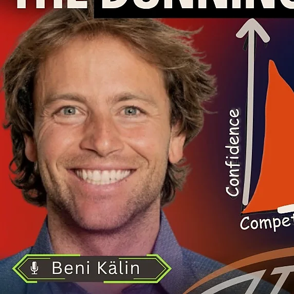
Cognitive Bias of Dunning Kruger Effect in Paragliding | Explained by…Beni Kalin & Heli SchrempfRisk and safety9 min7127 March 2026 Sports Psychology for ParaglidingYvonne DatheFly better68 min7020 March 2026
Sports Psychology for ParaglidingYvonne DatheFly better68 min7020 March 2026 From Cuba to SocotraChris GarciaLives in the air50 min6915 March 2026
From Cuba to SocotraChris GarciaLives in the air50 min6915 March 2026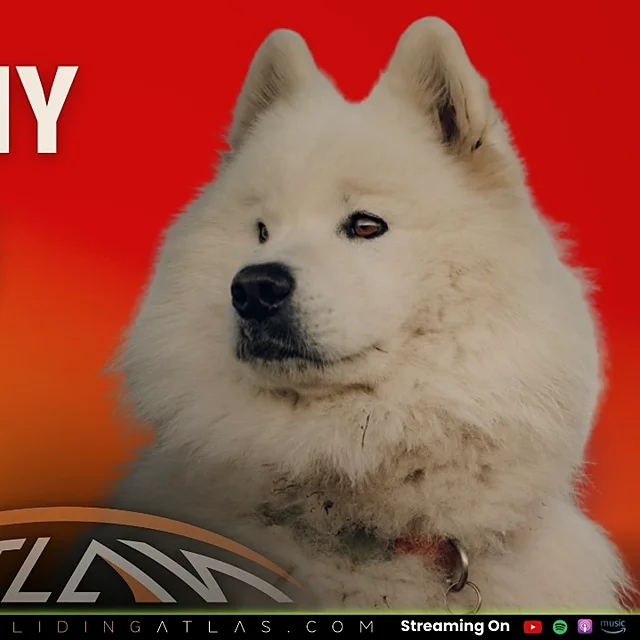
How to Fly With Your Dog | Explained by ShamsShams & OukaLives in the air49 min685 March 2026 Survived 15 Years of Flying Then a Rescue Helicopter Changed Everything…Nick NeynesRisk and safety73 min6729 January 2026
Survived 15 Years of Flying Then a Rescue Helicopter Changed Everything…Nick NeynesRisk and safety73 min6729 January 2026 From Tents to TrophiesLuke De WeertCompetition77 min667 January 2026
From Tents to TrophiesLuke De WeertCompetition77 min667 January 2026 Tom Lolies Explains The Science Of Wing Design and Evolution from ENC…Tom LoliesFly better92 min6526 December 2025
Tom Lolies Explains The Science Of Wing Design and Evolution from ENC…Tom LoliesFly better92 min6526 December 2025 The Art of Capturing Human Flight | Jake Holland's Guide to Filming…Jake HollandFly better65 min6416 December 2025
The Art of Capturing Human Flight | Jake Holland's Guide to Filming…Jake HollandFly better65 min6416 December 2025 Scoring in Paragliding CompetitionsJoerg EwaldCompetition74 min6311 December 2025still to comeSnippetUrs HaariFly better5 min624 December 2025
Scoring in Paragliding CompetitionsJoerg EwaldCompetition74 min6311 December 2025still to comeSnippetUrs HaariFly better5 min624 December 2025 Watch this Before you Buy a Paragliding Harness | A Talk with Zsolt EroZsolt EroFly better67 min6120 November 2025
Watch this Before you Buy a Paragliding Harness | A Talk with Zsolt EroZsolt EroFly better67 min6120 November 2025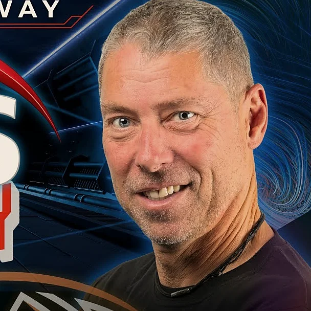
The Inside Story of Sports Racing Series (SRS) by Brett JanawayBrett JanawayCompetition75 min6011 November 2025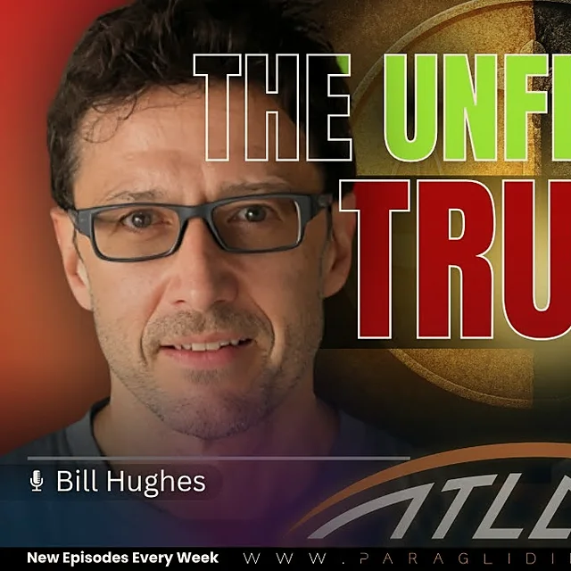
The Unfiltered Truth About Paragliding GovernanceBill Hughes & Goran DimiskovskiRisk and safety86 min5929 October 2025 Bill BelcourtBill BelcourtRisk and safety76 min5823 October 2025
Bill BelcourtBill BelcourtRisk and safety76 min5823 October 2025 Bruce Goldsmith explains MRT scoring system and its impact on…Bruce GoldsmithCompetition28 min5719 October 2025
Bruce Goldsmith explains MRT scoring system and its impact on…Bruce GoldsmithCompetition28 min5719 October 2025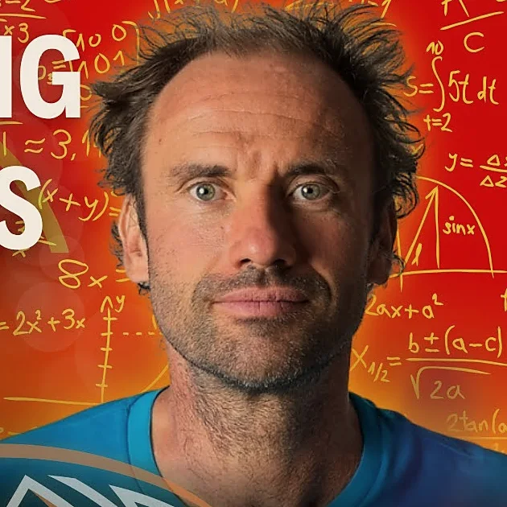
Luc Armant talks about Debunking the Myths and Upgrading Enzo 3Luc ArmantFly better40 min5610 October 2025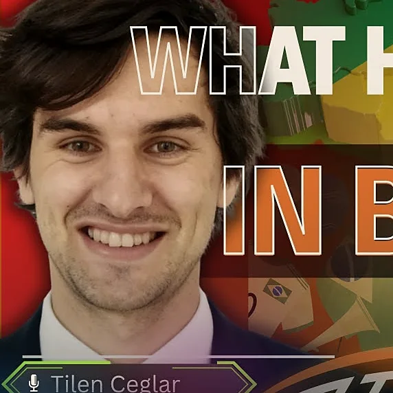
Insights From The Gaggle with Tilen Ceglar & Stan RadzikowskiTilen Ceglar & Stan RadzikowskiRisk and safety90 min554 October 2025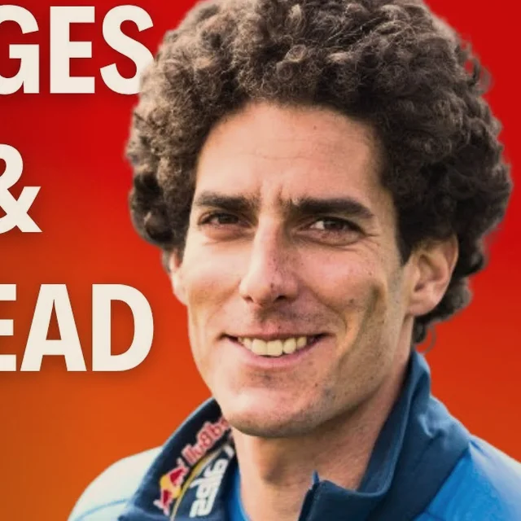
Pal Takats on Challenges, Change & The Future of Paragliding Pal TakatsThe industry68 min5426 September 2025 What is #CIVLRESIGN with Julien GarciaJulien GarciaRisk and safety29 min5330 August 2025still to comeAnatomy of a Dream with Damien LacazeDamien LacazeLives in the air63 min5223 August 2025still to comeDemystifying The Science Behind Endless Fun Factor of Parakites With…Bryan Van OstheimThe industry57 min517 August 2025still to comeLegacy and Lifetimes of Gin Seok SongGin Seok SongThe industry57 min5031 July 2025still to comeMaxime Pinot Maxime PinotCompetition103 min4917 July 2025
What is #CIVLRESIGN with Julien GarciaJulien GarciaRisk and safety29 min5330 August 2025still to comeAnatomy of a Dream with Damien LacazeDamien LacazeLives in the air63 min5223 August 2025still to comeDemystifying The Science Behind Endless Fun Factor of Parakites With…Bryan Van OstheimThe industry57 min517 August 2025still to comeLegacy and Lifetimes of Gin Seok SongGin Seok SongThe industry57 min5031 July 2025still to comeMaxime Pinot Maxime PinotCompetition103 min4917 July 2025 Understanding SkymateRoman BarthelemyThe industry72 min4814 July 2025still to comeScience Backed Pre Flight Rituals to Unlock Laser Sharp Paragliding…Aninder SinghFly better16 min4710 July 2025
Understanding SkymateRoman BarthelemyThe industry72 min4814 July 2025still to comeScience Backed Pre Flight Rituals to Unlock Laser Sharp Paragliding…Aninder SinghFly better16 min4710 July 2025 The Resilience EquationErlend UkvitneCompetition40 min467 July 2025still to comeMastering the UnknownAninder SinghFly better20 min4527 June 2025
The Resilience EquationErlend UkvitneCompetition40 min467 July 2025still to comeMastering the UnknownAninder SinghFly better20 min4527 June 2025 Consequence Over ProbabilityWill GaddRisk and safety63 min4421 June 2025
Consequence Over ProbabilityWill GaddRisk and safety63 min4421 June 2025 Why Paragliding’s Safety Future Looks DifferentMichael NeslerThe industry78 min4312 June 2025
Why Paragliding’s Safety Future Looks DifferentMichael NeslerThe industry78 min4312 June 2025 The Silent Mind In Screaming Winds Grant SmithFly better102 min421 May 2025
The Silent Mind In Screaming Winds Grant SmithFly better102 min421 May 2025 Meteorology 101Ivelin KalushkovFly better71 min4124 April 2025
Meteorology 101Ivelin KalushkovFly better71 min4124 April 2025 Urs HaariUrs HaariFly better166 min4017 April 2025
Urs HaariUrs HaariFly better166 min4017 April 2025 Shane Tighe’s Road to X-Alps Shane TigheCompetition53 min3911 April 2025
Shane Tighe’s Road to X-Alps Shane TigheCompetition53 min3911 April 2025 Aljaž Valič Aljaž ValičFly better94 min386 April 2025
Aljaž Valič Aljaž ValičFly better94 min386 April 2025 Sandrine Roy Sandrine RoyLives in the air43 min3710 March 2025
Sandrine Roy Sandrine RoyLives in the air43 min3710 March 2025 Alain ZollerAlain ZollerFly better96 min3624 February 2025
Alain ZollerAlain ZollerFly better96 min3624 February 2025 Ziad Bassil Ziad BassilFly better51 min3530 January 2025
Ziad Bassil Ziad BassilFly better51 min3530 January 2025 Eddie Colfox Eddie ColfoxLives in the air64 min3424 January 2025
Eddie Colfox Eddie ColfoxLives in the air64 min3424 January 2025 Ashutosh ChopraAshutosh ChopraFly better64 min3317 January 2025
Ashutosh ChopraAshutosh ChopraFly better64 min3317 January 2025 Kinga MasztalerzKinga MasztalerzRisk and safety101 min3210 January 2025
Kinga MasztalerzKinga MasztalerzRisk and safety101 min3210 January 2025 Helmut Schrempf Helmut SchrempfFly better80 min3029 December 2024
Helmut Schrempf Helmut SchrempfFly better80 min3029 December 2024 Storytellers : Marko Milutinovic (Mid-Air Collision)Marko MilutinovicLives in the air56 min2814 December 2024
Storytellers : Marko Milutinovic (Mid-Air Collision)Marko MilutinovicLives in the air56 min2814 December 2024 Flying & Filming 3 : Andreas Lattner (hochzwei.media)Andreas LattnerFly better76 min277 December 2024
Flying & Filming 3 : Andreas Lattner (hochzwei.media)Andreas LattnerFly better76 min277 December 2024 Flying & Filming 2 : Benjamin KelletBenjamin KelletFly better63 min2622 November 2024
Flying & Filming 2 : Benjamin KelletBenjamin KelletFly better63 min2622 November 2024 Risk Vs Reward 5 : Gabriel Orsini (partytillimpact)Gabriel OrsiniRisk and safety101 min2515 November 2024
Risk Vs Reward 5 : Gabriel Orsini (partytillimpact)Gabriel OrsiniRisk and safety101 min2515 November 2024 Helmet Safety : Christian Ciech : ICARO 2000Christian CiechFly better47 min247 November 2024
Helmet Safety : Christian Ciech : ICARO 2000Christian CiechFly better47 min247 November 2024 Risk Vs Reward 4 : Raúl RodríguezRaúl RodríguezRisk and safety57 min2313 October 2024
Risk Vs Reward 4 : Raúl RodríguezRaúl RodríguezRisk and safety57 min2313 October 2024 Brand Stories : Neo : Eric RousselEric RousselThe industry63 min226 October 2024Carabiner Fatigue : Finsterwalder & Charly (whitepaper)Finsterwalder & CharlyFly better17 min211 October 2024
Brand Stories : Neo : Eric RousselEric RousselThe industry63 min226 October 2024Carabiner Fatigue : Finsterwalder & Charly (whitepaper)Finsterwalder & CharlyFly better17 min211 October 2024 Flying & Filming 1 : Benjamin JordanBenjamin JordanFly better49 min2025 September 2024Living The Dream : Benjamin JordanBenjamin JordanLives in the air49 min1914 September 2024
Flying & Filming 1 : Benjamin JordanBenjamin JordanFly better49 min2025 September 2024Living The Dream : Benjamin JordanBenjamin JordanLives in the air49 min1914 September 2024 Risk Vs Reward 3 : Manfred RuhmerManfred RuhmerRisk and safety59 min186 September 2024
Risk Vs Reward 3 : Manfred RuhmerManfred RuhmerRisk and safety59 min186 September 2024 Risk Vs Reward 2 : Subir SidhuSubir SidhuRisk and safety56 min1729 August 2024
Risk Vs Reward 2 : Subir SidhuSubir SidhuRisk and safety56 min1729 August 2024 Risk Vs Reward 1 : Philipp ZellnerPhilipp ZellnerRisk and safety65 min1622 August 2024
Risk Vs Reward 1 : Philipp ZellnerPhilipp ZellnerRisk and safety65 min1622 August 2024 New Technologies 4 : Veselin Ovcharov (Fly The Earth)Veselin OvcharovThe industry59 min1515 August 2024still to comeNew Technologies 3 : Stephan Stiegler (AirDesign Paragliders)Stephan StieglerThe industry82 min1430 May 2024
New Technologies 4 : Veselin Ovcharov (Fly The Earth)Veselin OvcharovThe industry59 min1515 August 2024still to comeNew Technologies 3 : Stephan Stiegler (AirDesign Paragliders)Stephan StieglerThe industry82 min1430 May 2024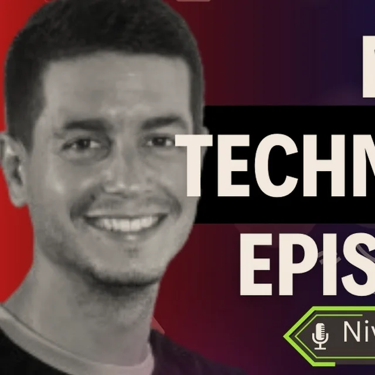
New Technologies 2 Guillem Batlle & Adrià GrauThe industry82 min1310 March 2024 New Technologies 1 : Beni Kälin (speedflyingschool.com)Beni KälinThe industry86 min126 March 2024
New Technologies 1 : Beni Kälin (speedflyingschool.com)Beni KälinThe industry86 min126 March 2024 PWC Lifestyle: Klaudia BulgakowKlaudia BulgakowCompetition72 min1125 February 2024
PWC Lifestyle: Klaudia BulgakowKlaudia BulgakowCompetition72 min1125 February 2024 PWCA: Goran DimiskovskiGoran DimiskovskiCompetition97 min1012 February 2024
PWCA: Goran DimiskovskiGoran DimiskovskiCompetition97 min1012 February 2024 Pre PWC Kenya: Nikolay YotovNikolay YotovLives in the air52 min97 January 2024
Pre PWC Kenya: Nikolay YotovNikolay YotovLives in the air52 min97 January 2024 Navigating Panchgani (Pre PWC India) : Vistasp KharasVistasp KharasLives in the air54 min83 January 2024
Navigating Panchgani (Pre PWC India) : Vistasp KharasVistasp KharasLives in the air54 min83 January 2024 AMA #1Aninder SinghFly better15 min724 December 2023
AMA #1Aninder SinghFly better15 min724 December 2023 Navigating Australia : Godfrey WennessGodfrey WennessLives in the air82 min617 December 2023
Navigating Australia : Godfrey WennessGodfrey WennessLives in the air82 min617 December 2023 Sky Gods : Flying to Win : Honorin HamardHonorin HamardCompetition108 min510 December 2023
Sky Gods : Flying to Win : Honorin HamardHonorin HamardCompetition108 min510 December 2023 Sky Gods : Flying 8000ers : Antoine GirardAntoine GirardCompetition67 min42 December 2023
Sky Gods : Flying 8000ers : Antoine GirardAntoine GirardCompetition67 min42 December 2023 Navigating India: Jigish Gohil (Bonus Ep)Jigish GohilLives in the air36 min326 November 2023
Navigating India: Jigish Gohil (Bonus Ep)Jigish GohilLives in the air36 min326 November 2023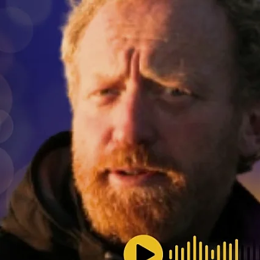
Navigating India: Eddie ColfoxEddie ColfoxLives in the air52 min220 November 2023 Navigating Colombia: Pal TakatsPal TakatsLives in the air73 mindate to supply
Navigating Colombia: Pal TakatsPal TakatsLives in the air73 mindate to supply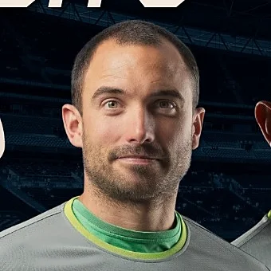
Task 5 Highlights | 15th Paragliding World Cup Super Final Pegalajar…World CupsCompetitiondate to supplyTask 4 Highlights | 15th Paragliding World Cup Super Final Pegalajar…World CupsCompetitiondate to supply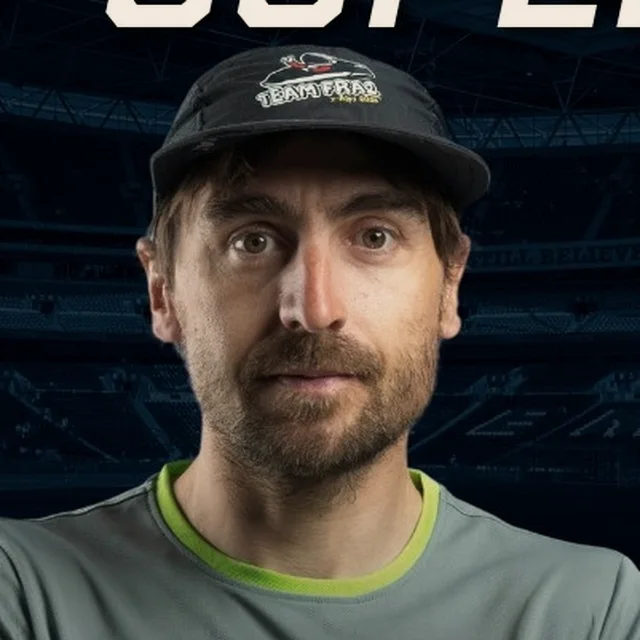
Task 2 Highlights | 15th Paragliding World Cup Super Final Pegalajar…World CupsCompetitiondate to supply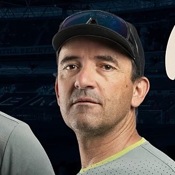
Task 1 Highlights | 15th Paragliding World Cup Super Final Pegalajar…World CupsCompetitiondate to supply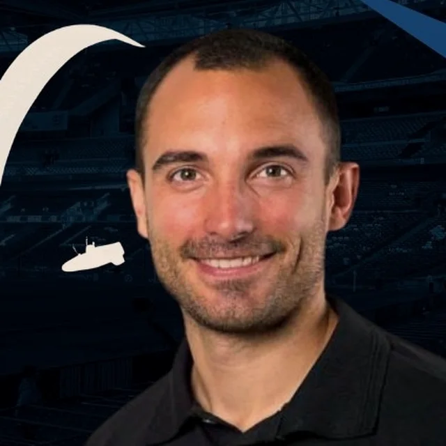
Highlights Day 1 - PWCA Superfinal 2026World CupsCompetitiondate to supply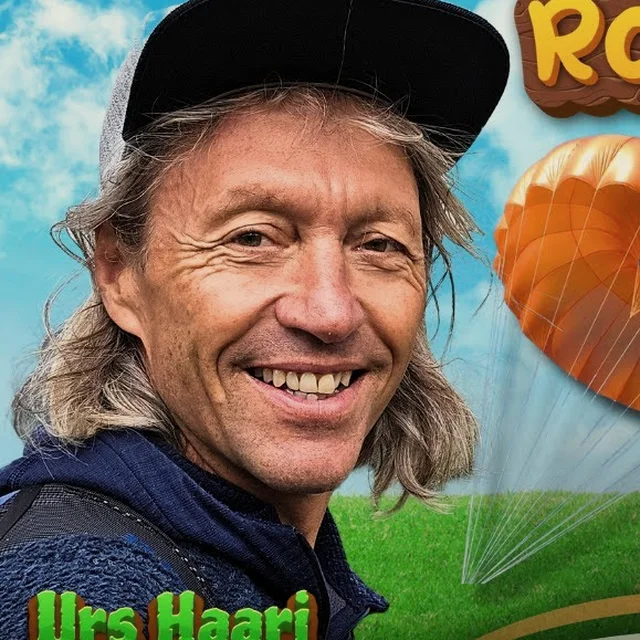
Can we Steer a Round Reserve Parachute? Urs Haari Answers!Urs HaariFly betterNothing matches. Clear the filter to see all 86.
Films and short pieces
Flying films and shorter pieces from the podcast's channel, outside the numbered episodes.
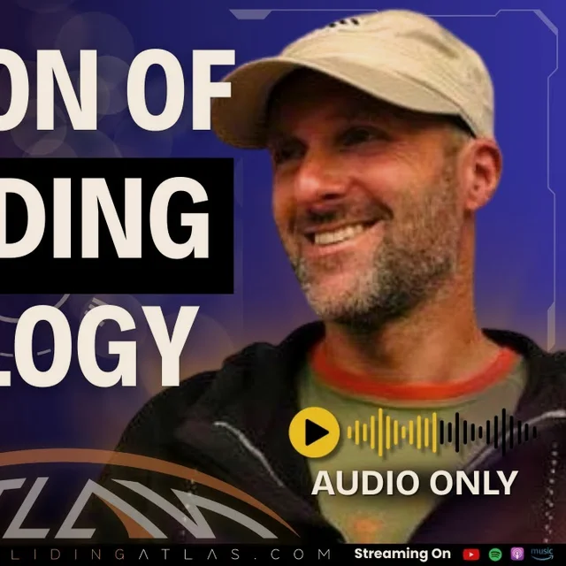
New Technologies 5 : Frantisek Pavlousek (UP Paragliders)Frantisek Pavlousek · 22 December 2024 · 82 min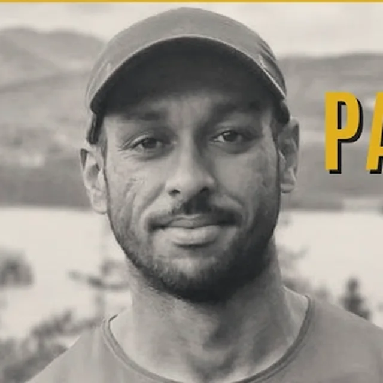
Touch The Sky With GloryAninder Singh · 15 November 2023 · 2 min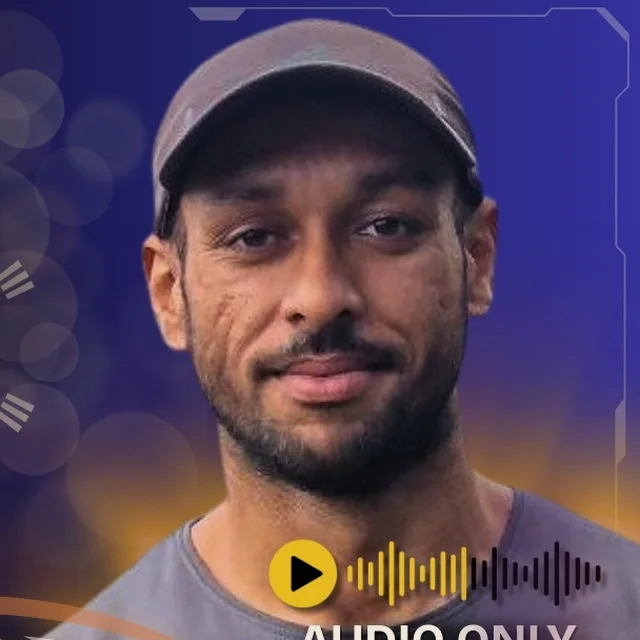
A Note of ThanksAninder Singh · 5 January 2025 · 8 min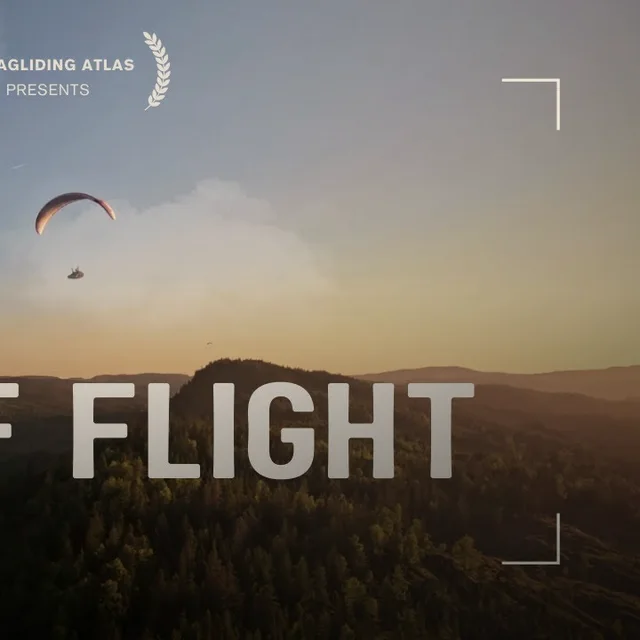
Art Of Flight in Norwegian Skies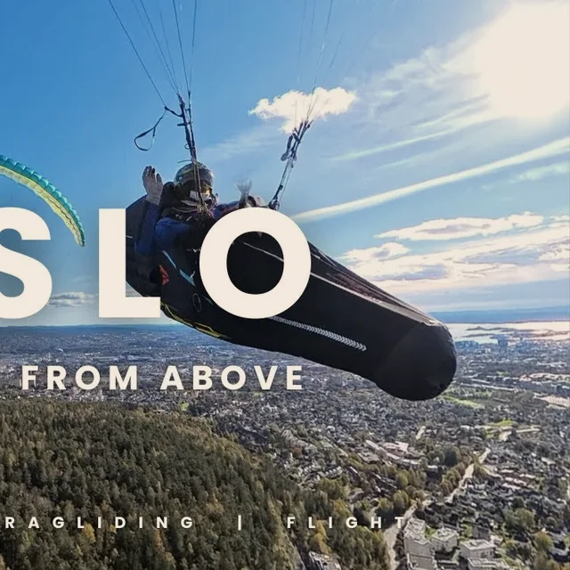
Bird’s-Eye View of Oslo: Stunning Nordic Cityscape: Part 2Just another day in Paradise ✨😍 #oslo #paragliding #norway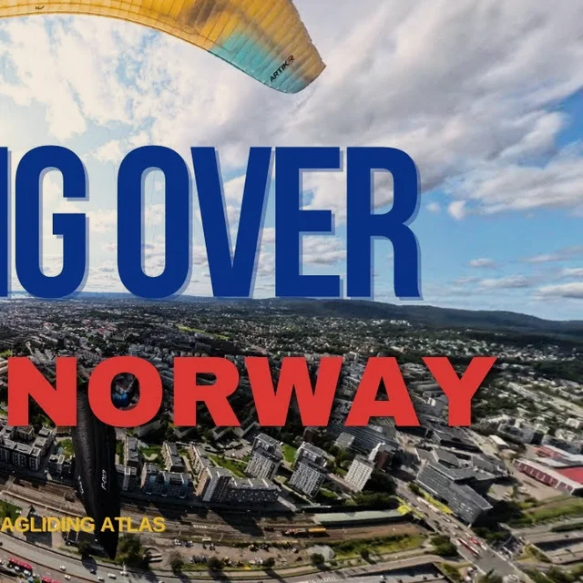
Bird’s-Eye View of Oslo: Stunning Nordic Cityscape